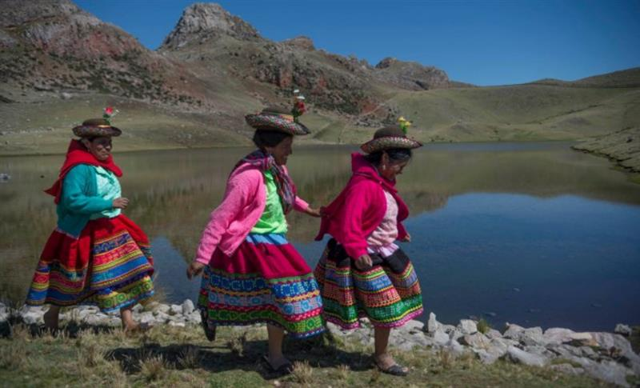
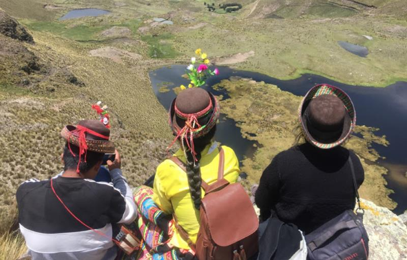
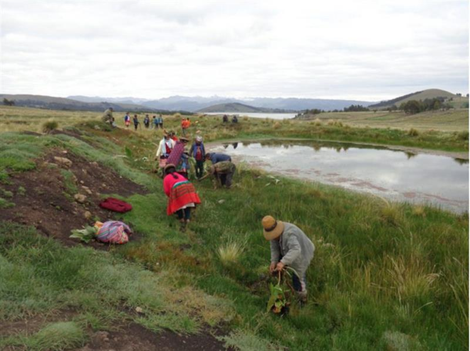
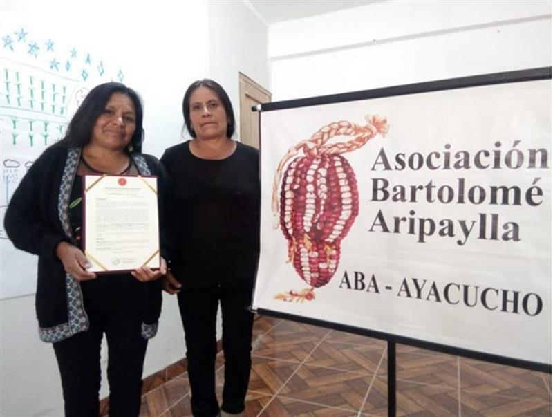
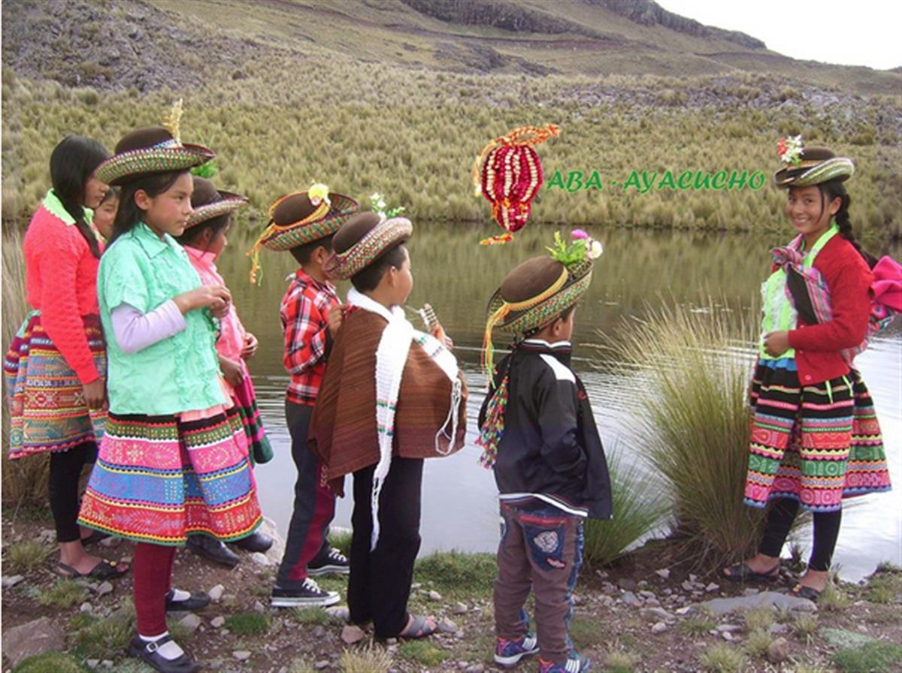
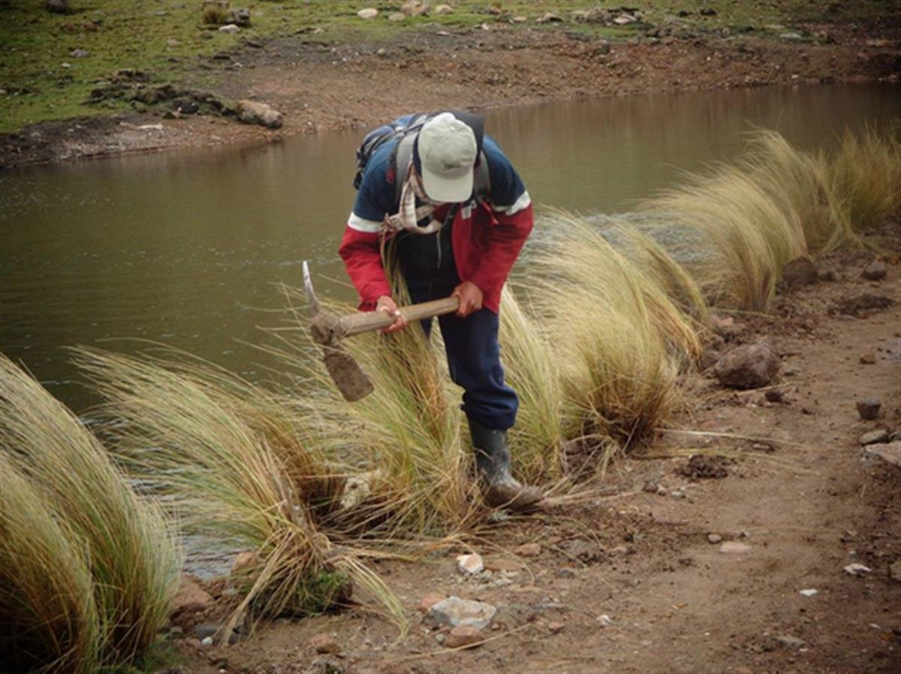
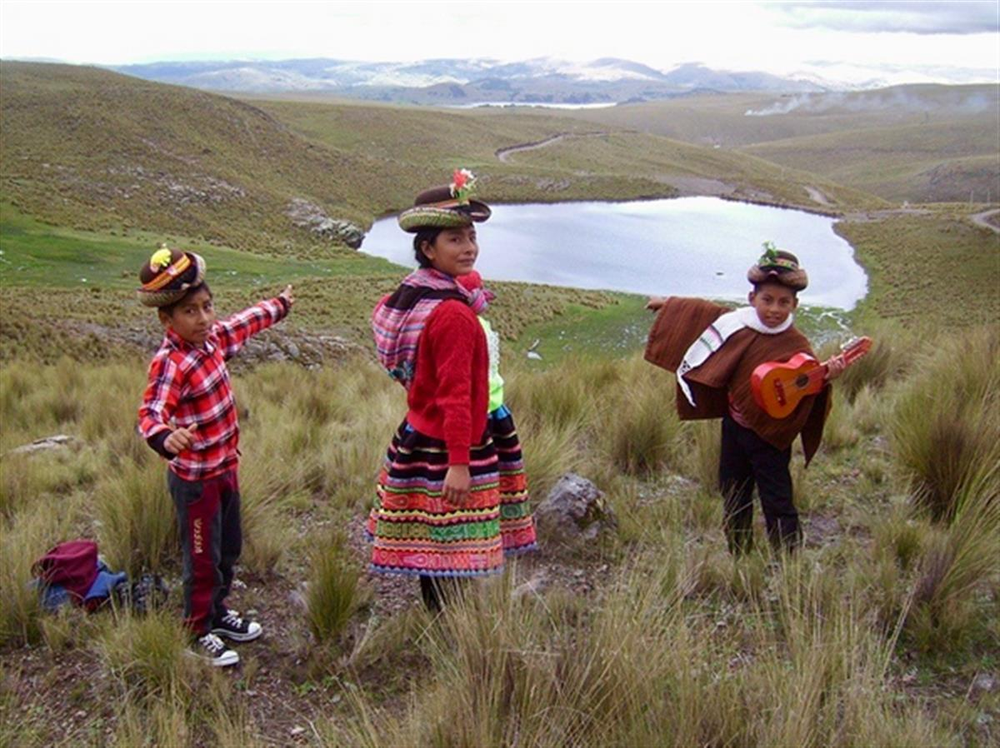
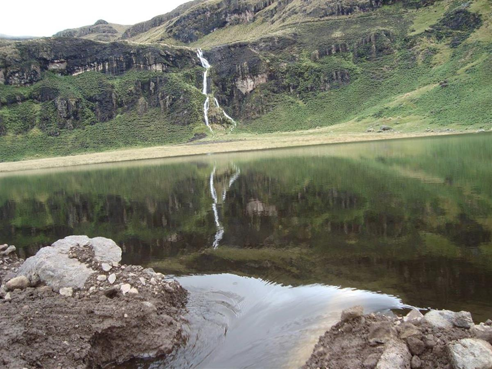
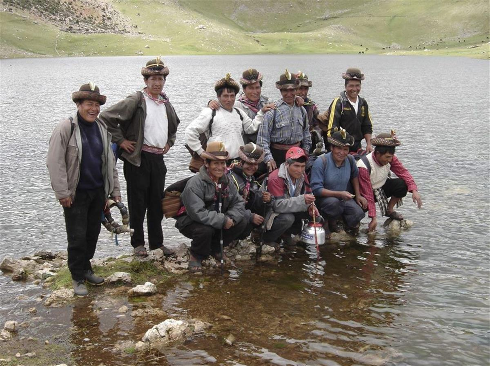
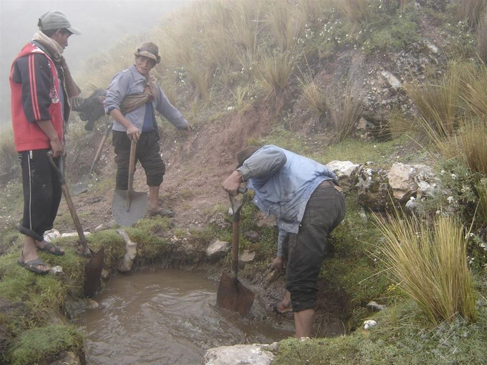

Peru (Ayacucho)
“Climate is a living being to us. And lately it’s been acting a little crazy.” – Marcela Machaca
As climate change shrinks Andean glaciers and brings water shortages, two Quechua sisters are building traditional ‘sacred’ reservoirs to harvest rain. You can see them from space (the lagoons, not the sisters).



About 40 years ago, the snow that once covered the Andes mountains near the Peruvian city of Ayacucho started to disappear. Water became scarce for more than 200,000 people in the south-central region, most of them from the Quechua indigenous community.
“We had to ration water. Some years, we had water for only two hours a day,” – Dersi Zevallos, Coordinator with Peru’s water and sanitation regulator SUNASS.
Quechua sisters Magdalena and Marcela Machaca (pictured below) – both agricultural engineers – found a solution by looking to the past. They built reservoirs high in the mountains to harvest and ‘cultivate’ rainwater, the same way their ancestors did.

Climate change has led to increasingly dry conditions for communities in the Peruvian Andes. Now the city gets only half that much rain every year. Glaciers, another source of water for the Quechua, have also been affected by warming temperatures. Across Peru, glaciers have lost nearly 30% of their area.
To help cope with the situation, manmade mountain-top reservoirs – which locals call lagoons – capture and store water during the rainy season from November to February. In the dry season, the water filters through the ground to recharge the rivers and aquifers used by local authorities to provide water to residents and farms. “The lagoons play the role that the frozen mountain-tops used to play,” Marcela explains.” The Quechua people consider the reservoirs sacred, believing they nurture water at the start of its life. Our communities are the protectors of water and we are proud of that.”
The sisters built their first reservoir back in 1995 through their organisation, Asociación Bartolomé Aripaylla (ABA) which uses traditional knowledge to help indigenous communities improve their economic activities. Since then, they have built more than 120, which together provide Ayacucho with more than 130 million cubic metres of water for human and agricultural use.

Sally Bunnings, a water management expert at the U.N. Food and Agriculture Organisation, said the impact of climate change on mountain glaciers, which are melting as global temperatures rise, poses a threat to high-altitude communities. They should follow the Quechua example of trying to use water resources as efficiently as possible.
“From an early age they should learn to recognise and prevent the effects of abrupt change in temperature and make good use of water,” Sally says.
Almost a quarter of Peru’s population identifies itself as Quechua, making up the country’s largest ethnic group, according to the latest census in 2017. Marcela and her sister first heard about the ancient spiritual practice of “nurturing water” through their grandfather when they were children in the 1970s. By that time, it was no longer practised. Then, just as the snow in Ayacucho’s mountains started to dwindle, conflict came to the area.
Ayacucho became the base for the Maoist rebel group Shining Path, or Sendero Luminoso in Spanish, which launched a bid to overthrow the state in 1980. Some 70,000 people were killed before the conflict ended nearly 20 years later. “People were just trying to escape with their lives. They disregarded the spiritual practices,” Marcela explains. “People forgot to treat nature like a living being.”
The El Nino weather phenomenon hit Peru in 1992, making water even more scarce. That was when the sisters were motivated to build their first artificial lagoons. They choose natural landscapes already shaped like reservoirs, to reduce the amount of digging. With agreement from local communities and authorities, they seal any leaks with soil and plant native ferns that keep the soil firm, naturally filter the water and shelter birds.

Each reservoir – some up to 600 metres (1,970 feet) in diameter – usually takes just a couple of months to build and fills up fast in the rainy season. The sisters create small canals to let water escape and prevent the reservoir overflowing in heavy rains, and those take water to the mountain communities. At the same time, the reservoirs recharge the aquifers and groundwater used for the city’s water supply.

According to SUNASS data, in 2010, the Cachi river basin was estimated to provide around 80 million cubic metres of water before any reservoirs were built in the area. By the end of the year, 15 million additional cubic metres of water were flowing from the lagoons. That water was given to farmers who would not otherwise have had enough.
The pair’s brother, Nemesio, a farmer lower down the mountain, said the area previously had no water in the dry season: “Our cattle had nothing to drink, so they were very thin. We couldn’t extract milk. Now we can.”
The city government cannot fund the construction of the reservoirs, which cost about $1 million each. That often leaves the Machaca sisters struggling to find money for new projects, which are almost entirely paid for by their association. But the government does give the sisters technical advice to ensure the vital reservoirs properly charge local water sources.
Other parts of Latin America could learn from Ayacucho’s experience with water conservation, said Gustavo Solano, project coordinator at the Association for Investigation and Integral Development, a Peru-based organisation that promotes nature-based solutions to climate change. With supervision from the Machaca sisters, it has started replicating the reservoirs in Guanacaste, a region in northern Costa Rica that is regularly hit by drought. So far, five reservoirs have been built in the area’s mountains, which charge three rivers that provide water for farms in the dry plains below, Solano said.
“In this region, rains will reduce and temperatures will go up,”Gustavo explains. “For these communities, there is no option but to adapt. If they don’t, they will be risking their own lives.”
► Meet Magdalena Machaca:
Open on original site ↗AtlasAction: Learn more about the sisters’ work with ABA here.
Submitted by Lisa Goldapple, Editor, Atlas of the Future (02 March 2020)



SOURCE: ATLAS OF THE FUTURE